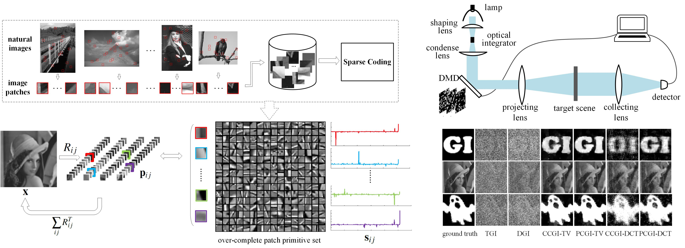

| Patch-primitive driven compressive ghost imaging. |
Xuemei Hu1,2 Jinli Suo1,2 Tao Yue1,2 Liheng Bian1,2 and Qionghai Dai1,2 |

|
Publications |
| Xuemei Hu, Jinli Suo, Tao Yue, Liheng Bian and Qionghai Dai, Patch-primitive driven compressive ghost imaging, Optics Express(OE), 2015, 23(9): 11092-11104. |
Abstract |
| Ghost imaging has rapidly developed for about two decades and attracted wide attention from different research fields. However, the practical applications of ghost imaging are still largely limited, by its low reconstruction quality and large required measurements. Inspired by the fact that the natural image patches usually exhibit simple structures, and these structures share common primitives, we propose a patch-primitive driven reconstruction approach to raise the quality of ghost imaging. Specifically, we resort to a statistical learning strategy by representing each image patch with sparse coefficients upon an over-complete dictionary. The dictionary is composed of various primitives learned from a large number of image patches from a natural image database. By introducing a linear mapping between non-overlapping image patches and the whole image, we incorporate the above local prior into the convex optimization framework of compressive ghost imaging. Experiments demonstrate that our method could obtain better reconstruction from the same amount of measurements, and thus reduce the number of requisite measurements for achieving satisfying imaging quality. |
Materials |
||||||||
|
||||||||
Bibtex |
@article{hu2015patch,
title={Patch-primitive driven compressive ghost imaging},
author={Hu, Xuemei and Suo, Jinli and Yue, Tao and Bian, Liheng and Dai, Qionghai},
journal={Optics express},
volume={23},
number={9},
pages={11092--11104},
year={2015},
publisher={Optical Society of America}
} |
Acknowlegements |
| This work was supported by the projects of National Science Foundation of China (Nos. 61327902 and 61120106003), NSF award 1115680. The research is also funded by Beijing Key Laboratory of Multi-dimension & Multi-scale Computational Photography (MMCP), Tsinghua University |
| Last updated: Sat, 05/23/2015 |